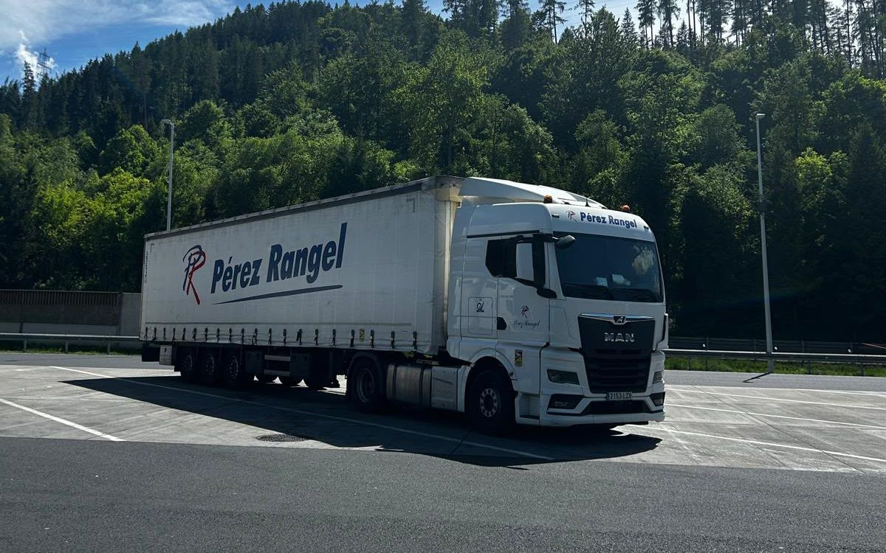
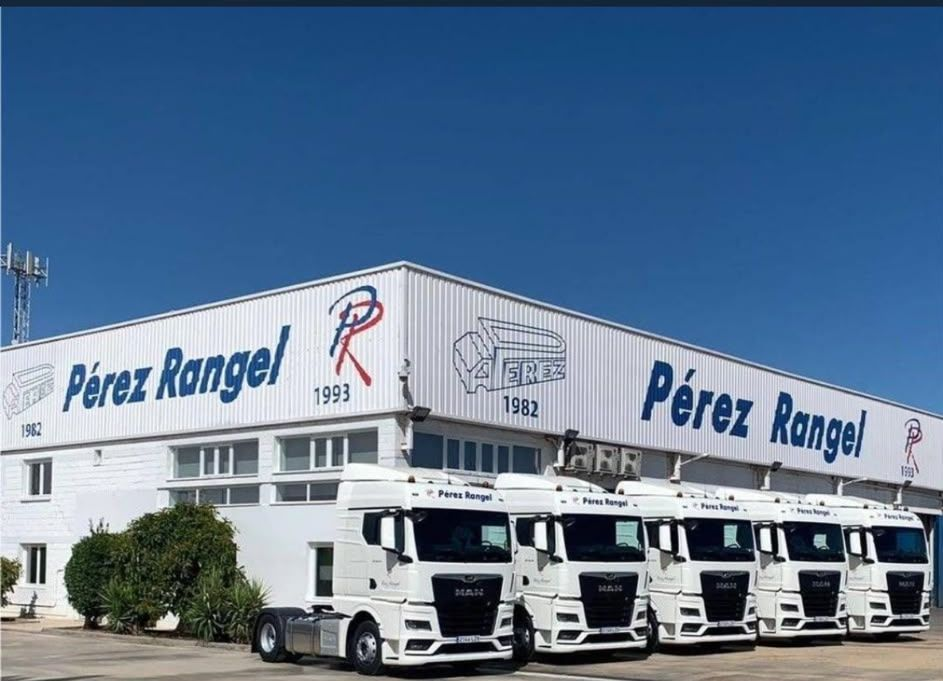
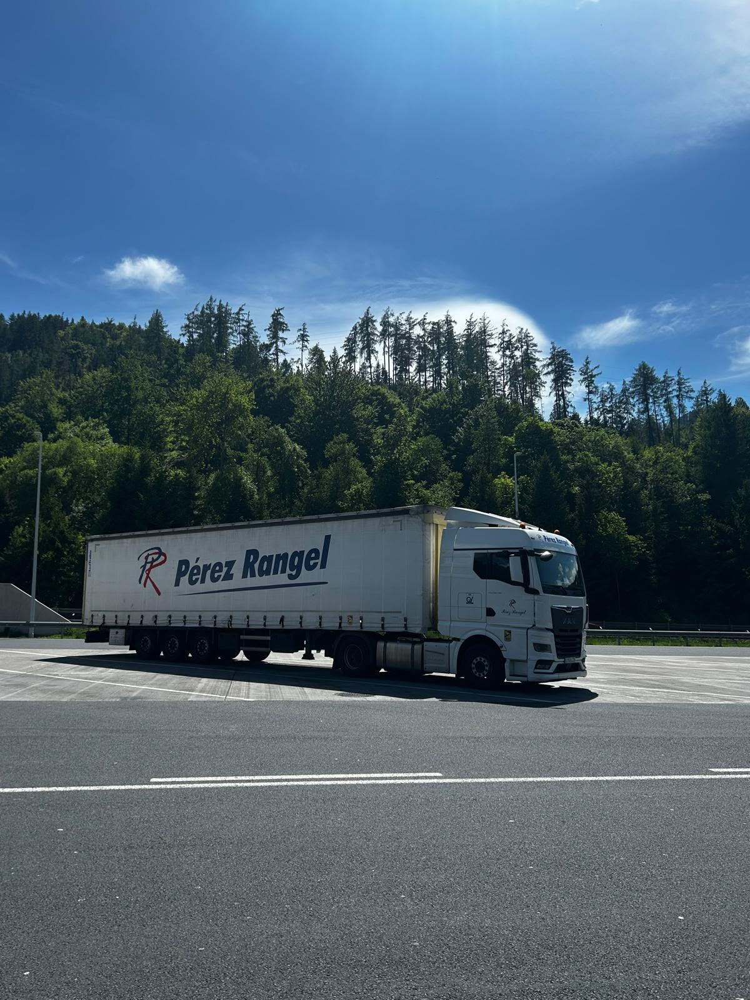
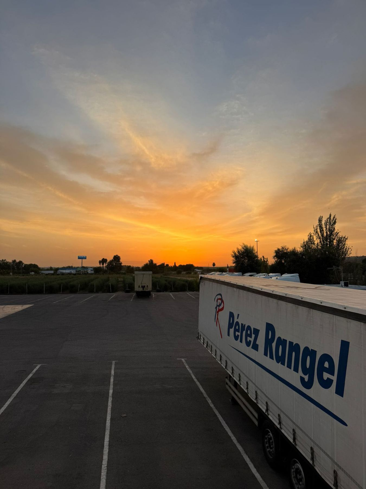
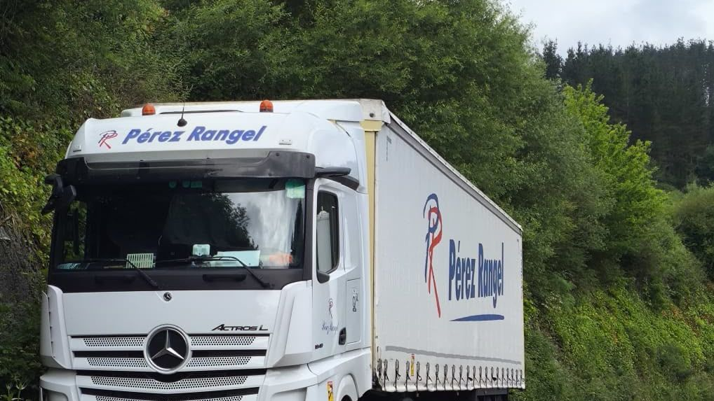
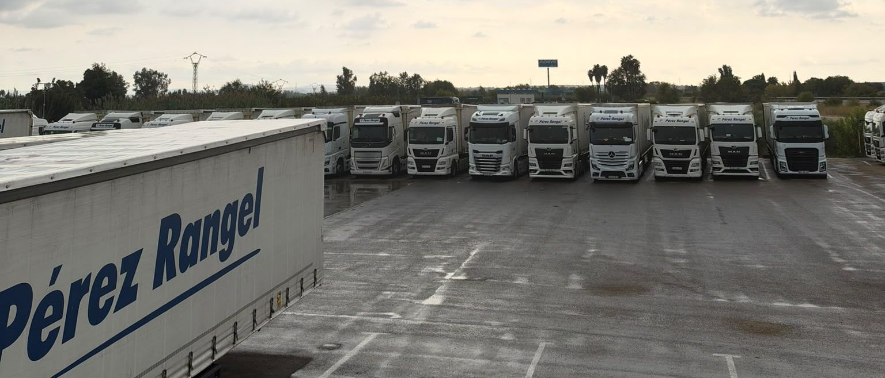
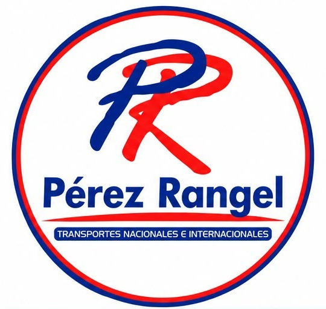
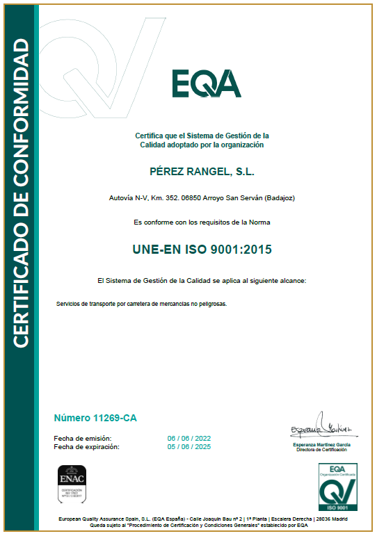
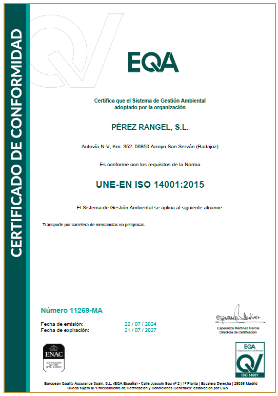

MC-20-0024 · Implantación de un Sistema de Gestión de Calidad ISO 9001:2015. Ayuda de 4.800 € cofinanciada al 80 % por el Fondo Europeo de Desarrollo Regional.
La mejor manera de transportar tus mercancías
Transporte nacional e internacional por carretera, almacenaje, grupajes y distribución. Más de cuarenta años moviendo la industria desde Extremadura a toda Europa.
- Fotografía
- Base logística · Arroyo de San Serván
- Flota
- +40 tractoras · 50 semirremolques tautliner
- Base
- Autovía Madrid–Lisboa, km 352
- Actividad
- Desde 1982
Años en la carretera0
Tractoras MAN, Volvo, Mercedes-Benz y DAF0
Semirremolques tautliner0
Almacén vigilado 24 h0
Un servicio según tus necesidades
Soluciones logísticas adaptadas a cada cliente, enfocadas en que tu cadena de producción nunca pare. Sean cuales sean tus mercancías, cuenta con Transportes Pérez Rangel.

Transporte nacional e internacional
Todo tipo de mercancías por carretera, dentro y fuera de España, con conductores profesionales que hablan varios idiomas.

Almacenaje
Más de 5.000 m² en nuestra base logística, con vigilancia permanente.

Grupajes
Varios clientes en un mismo vehículo: menos coste, mismos plazos.

Distribución
Reparto y entrega final coordinados desde nuestro departamento de tráfico.

Seguimiento GPS
Sabes dónde está tu mercancía en cada momento.

Vigilancia 24 horas
Instalaciones vigiladas de forma permanente.
Una de las flotas más modernas del sector
Tractoras MAN, Volvo, Mercedes-Benz y DAF de última generación y semirremolques tautliner con portabobinas. Un departamento de mantenimiento propio revisa cada vehículo antes de salir a ruta.
Desliza para ver la flota
- Tractoras
- +40
- Semirremolques
- 50
- Carrocería
- Tautliner · portabobinas
- Localización
- GPS en toda la flota
- Mantenimiento
- Departamento propio
- Base
- Arroyo de San Serván
De Extremadura a toda Europa
La base está en la autovía Madrid–Lisboa, en Arroyo de San Serván: junto a Portugal y en el eje que conecta con Madrid y el resto de la península. Nuestro equipo de tráfico atiende en varios idiomas y nuestros conductores cargan y descargan en toda Europa.
- Rutas regulares nacionales
- Internacional: Portugal, Francia y resto de Europa
- Base logística con almacén propio y vigilancia 24 h
- Sevilla≈ 2 h
- Lisboa≈ 2 h 30
- Madrid≈ 3 h 15
- Oporto≈ 4 h 30
Tiempos orientativos en condiciones normales.
Consultar una rutaEsquema de rutas habituales · no es un plano a escala
Tres pasos, sin sorpresas
Desde que nos cuentas la carga hasta que llega a destino, sabes en cada paso qué hacemos y qué recibes.
- 01
Nos cuentas tu carga
Origen, destino, mercancía y plazo.
RecibesPresupuesto claro y sin letra pequeña
- 02
Planificamos la ruta
Nuestro departamento de tráfico asigna vehículo y conductor y coordina la carga en tu horario.
RecibesVehículo, conductor y hora de carga
- 03
Entregamos con seguimiento
Sabes dónde está tu mercancía en cada momento gracias al GPS de toda la flota.
RecibesPosición en ruta y aviso de entrega
Llueva, nieve o haga 40 grados, tu mercancía llega.

Una empresa afianzada y experta
Empresa familiar nacida en 1993 de la unión de profesionales de la logística y el transporte, con origen en 1982. Hoy rondamos los 50 trabajadores entre las diferentes áreas, con un personal altamente cualificado y comprometido con el trabajo diario.
- 1982Comienza la actividad de transporte de la familia Pérez.
- 1993Nace Pérez Rangel, S.L. Base en la autovía Madrid–Lisboa.
- HoyMás de 40 tractoras, 50 semirremolques y 5.000 m² de almacén.
Tráfico
Atención personalizada en varios idiomas, nacional e internacional.
Administración
Contabilidad, facturación, recursos humanos, calidad y cobros y pagos.
Mantenimiento
Instalaciones y revisión de vehículos para salir a ruta en perfecto estado.
Comercial
Relación con clientes y captación de conductores profesionales.
Conductores
Profesionales del transporte nacional e internacional, muchos de ellos multilingües.
Calidad y medio ambiente certificados
Sistema de gestión certificado por EQA con acreditación ENAC para el transporte por carretera de mercancías no peligrosas.

Calidad
UNE-EN ISO 9001:2015
Certificado nº 11269-CA · EQA / ENAC
Ver certificado
Medio ambiente
UNE-EN ISO 14001:2015
Certificado nº 11269-MA · EQA / ENAC
Ver certificadoDocumento
Política de calidad y medio ambiente
Compromiso de la dirección con la mejora continua, el cumplimiento legal, la satisfacción del cliente y la prevención de la contaminación.
Leer la políticaAyudas cofinanciadas por la Unión Europea
AC-24-0003-2 · Implantación y certificación de un Sistema Medioambiental ISO 14001:2015. Ayuda de 3.200 € cofinanciada al 85 % por el Fondo Europeo de Desarrollo Regional.
«Una manera de hacer Europa». Textos completos: MC-20-0024 · AC-24-0003-2.
¿Quieres formar parte de Pérez Rangel?
Buscamos personal administrativo, gestores de tráfico, conductores y personal de mantenimiento. Envía tu currículum y te contestaremos.
- Conductor/a nacional e internacional
- Gestor/a de tráfico
- Personal administrativo
- Personal de mantenimiento
Candidaturas: administracion@perezrangel.com
Hablemos de tu próxima carga
- Empresa
- Pérez Rangel, S.L.
- Dirección
- Autovía Madrid–Lisboa, km 352
06850 Arroyo de San Serván (Badajoz) - Teléfono
- Por confirmar
- Horario
- Por confirmar